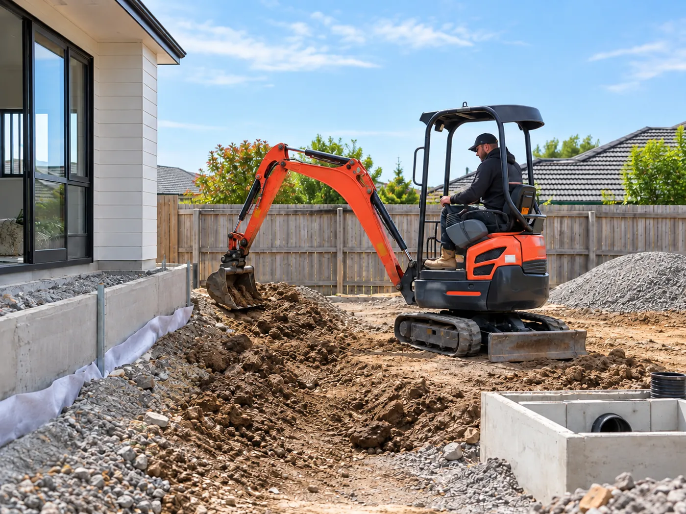

Excavation & mini excavator services in Rouse Hill
Tight access excavation, trenching, drainage and site preparation for Rouse Hill homes, by a local operator based in Dural.
Rouse Hill NSW 2155
Local excavation for Rouse Hill, done carefully.
Rouse Hill has a mix of established homes and newer estates on compact lots. Typical jobs are prepping backyards for turf and paving, digging retaining wall footings and sorting drainage.
Newer estates often mean small lots, tight side setbacks and a backyard you can only reach through a narrow path or the garage. A compact machine gets in without damaging what’s already been built.
Common jobs in Rouse Hill
- Landscaping prep after handover
- Turf, paving and garden bed preparation
- Retaining wall footings
- Side path and pathway digs
- Drainage and stormwater trenching
- Levelling and spoil removal
Council area: The Hills Shire and Blacktown City. If your job needs approvals or engineer levels, send them through and we’ll dig to suit.
Our machine
Kubota U17-3 1.7 tonne mini excavator.
A compact machine built for tight sites. Its tracks pull in narrow enough for most side gates and passages, and the short tail swing means it can work close to houses, fences and walls.
- Fits through narrow side access
- Works close to structures
- Light on lawns and driveways
- Operated by us, every job
Do you work in Rouse Hill?
Yes. Rouse Hill is part of our local area, close to our Dural base. We do excavation, trenching, drainage, site preparation and small demolition jobs right across Rouse Hill and nearby suburbs.
How much does excavation cost in Rouse Hill?
Every site is different, so we price from a free site visit. That way the quote reflects your real access, soil and levels, with no surprises and no obligation.
Can your machine get into my backyard?
Most likely. Our 1.7 tonne mini excavator is built for narrow side access. Measure the narrowest point of your gate or side path and include it in your enquiry, and we’ll confirm straight away.
Nearby
We also work in.

Ready to get started?
Need an excavator in Rouse Hill?
Tell us about the job and we’ll arrange a free site visit and quote. No cost, no obligation.